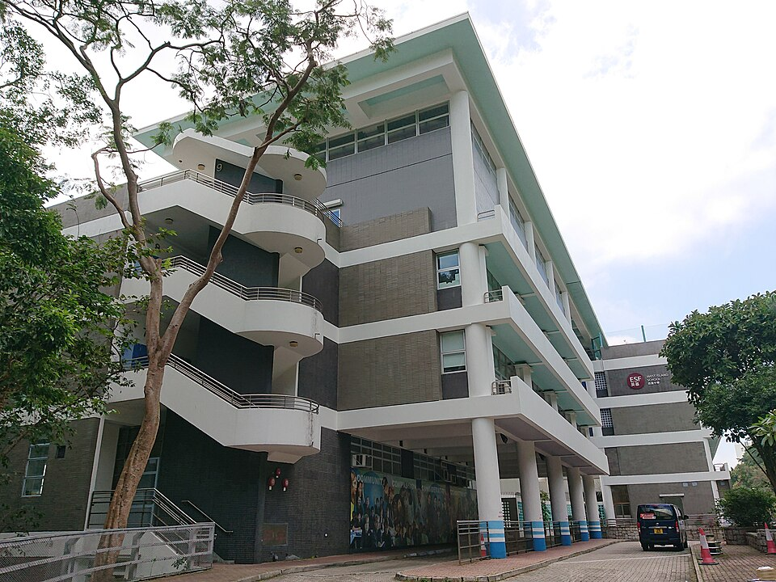

웨스트 아일랜드 스쿨 빅토리아로드 캠퍼스 · 사진: Ceeseven / Wikimedia Commons, CC BY-SA 4.0
웨스트 아일랜드 스쿨(West Island School, 홍콩 ESF) — 마지막 2년의 길이 넷, 결정은 Year 9에 시작됩니다
⚠️ 이름 혼동 주의 — 홍콩에는 "아일랜드"가 들어가는 ESF 학교가 셋입니다. 웨스트 아일랜드 스쿨(이 글, 포크풀람 빅토리아로드) · 아일랜드 스쿨(미드레벨 보렛로드) · 사우스 아일랜드 스쿨은 서로 다른 학교입니다. 게다가 웨스트 아일랜드 스쿨은 1991년 개교 당시 미드레벨 보렛로드 건물을 임시로 썼던 것으로 알려져 있어, 옛 글에는 두 학교가 같은 주소로 적혀 있기도 합니다. 글을 읽기 전에 주소와 작성 연도부터 보세요. ESF는 학교 이름이 아니라 재단 이름이라는 설명은 디스커버리 칼리지 글에 있습니다.
1. 어떤 학교인가
웨스트 아일랜드 스쿨은 1991년에 문을 연 것으로 알려진 ESF 소속 중등학교입니다. 처음에는 미드레벨의 옛 군 병원 건물에서 시작했고, 1994년에 포크풀람 빅토리아로드 250번지의 현재 캠퍼스로 옮긴 것으로 소개됩니다. 이후 학생이 늘면서 2003년에 건물 한 동이 더 지어진 것으로 전해집니다.
받는 학년은 Year 7부터 Year 13까지, 나이로는 만 11세에서 18세 무렵입니다. 초등 과정은 없습니다. 이 점은 같은 ESF의 아일랜드 스쿨과 같습니다.
교육과정은 세 구간으로 나뉘는 구조로 안내됩니다.
· Year 7~9 — IB MYP(중등 과정)를 바탕으로 한 중등 저학년 과정
· Year 10~11 — IGCSE, 일부 BTEC 과목
· Year 12~13 — IB 디플로마(DP) · IB 커리어 관련 프로그램(CP) · BTEC 등 여러 경로
한 가지 덧붙이면, 이 학교의 하우스(House) 이름이 중국 왕조 이름(한·당·송·원·명·청)으로 알려져 있습니다. 홍콩의 영국계 학교에서는 드문 구성이고, 아이가 입학하면 과목 교사와 별도로 하우스 쪽 담당 교사가 생깁니다. 연락 창구가 둘이 되는 구조는 담임·어드바이저 안내에 정리해 두었습니다.
※ Year 7~9 과정의 이름과 Year 12·13 경로의 구성은 자료마다 조금씩 다르게 적혀 있습니다. 학생 수·학비·연도별 시험 결과처럼 해마다 달라지는 수치는 이 글에 적지 않았습니다. 그해 개설 과목과 경로는 학교 입학처에 직접 확인하세요.
2. 이 글의 핵심 — 마지막 2년의 선택은 Year 9에서 시작됩니다
선택지가 여럿인 학교는 좋아 보입니다. 그런데 실제로 학부모님이 겪으시는 일은 이렇습니다. Year 11 가을에 "이제 경로를 정하세요"라는 안내를 받는데, 그때 이미 고를 수 있는 조합이 정해져 있습니다.
이유는 간단합니다. Year 12에 어떤 과목을 어느 수준으로 들을 수 있는지가 Year 10·11에 무엇을 이수했는지에 크게 달려 있기 때문입니다. 그리고 그 Year 10·11 과목은 Year 9 말에 고릅니다. 즉 실질적인 분기점은 아이가 만 13~14세일 때입니다.
| 마지막 2년의 경로 | 공부·평가 방식 | 앞 2년에서 준비해 둘 것 |
|---|---|---|
| IB 디플로마(DP) | 여섯 과목 균형 + 마지막 외부 시험 비중이 큼 | 수학·과학·제2언어를 IGCSE에서 끊지 않기 |
| IB 커리어 관련 프로그램(CP) | IB 과목 일부 + 직업 관련 과정을 함께 | 관심 분야를 Year 10에 과목으로 한 번 겪어 보기 |
| BTEC 중심 | 2년 내내 과제·단위 누적(외부 시험 비중이 낮음) | 기한 관리 습관 — 벼락치기가 가장 안 통하는 방식 |
| 그 밖의 학교 자체 경로 | 과목을 스스로 조합하는 성격이 강함 | 진학 목표 나라를 먼저 정해 두기 |
⚠️ 반드시 확인하실 것 — CP·BTEC·학교 자체 경로 이수자의 대학 지원 자격 인정 범위는 나라와 대학마다 다릅니다. 한국·영국·미국·호주 중 어디를 염두에 두셨는지에 따라 답이 완전히 달라집니다. Year 10에서 Year 11 사이에 진학 담당 선생님과 함께 해당 대학 요강을 확인하시기 바랍니다. 또 각 경로의 개설 여부와 이름은 해마다 바뀔 수 있습니다.
정리하면 이렇습니다. "어느 쪽이 쉬운가"는 질문이 틀렸습니다. 디플로마는 시험에서 힘을 내는 아이에게, CP·BTEC 쪽은 2년 동안 꾸준히 제출하는 아이에게 맞습니다. 그리고 그 판단을 하려면 Year 9~10에 아이가 어느 쪽에서 버티는지를 이미 보고 있어야 합니다.
3. 한국(주재원) 학생이 겪는 어려움 — 7년 동안 규칙이 두 번 바뀝니다
이 학교에 입학하면 아이는 구간마다 다른 채점 방식을 만납니다. 막히는 지점도 구간마다 다릅니다.
| 구간 | 평가 방식 | 한국 학생이 막히는 곳 |
|---|---|---|
| Year 7~9 (MYP 계열) | 기준표(criteria)로 채점 | 답은 맞는데 근거를 쓰지 않아 점수가 깎입니다 |
| Year 10~11 (IGCSE·BTEC) | 2년 코스 — 시험형과 과제형이 섞임 | 중간 합류가 가장 어렵습니다 — 코스가 이미 절반 진행 |
| Year 12~13 (DP·CP·BTEC) | 경로마다 평가 비중이 다름 | 경로를 잘못 고르면 2년 내내 안 맞는 방식으로 버팁니다 |
표의 가운데 줄은 다른 영국식 학교와 같습니다. Year 10 전후(한국 중2~중3 무렵)의 편입이 가장 위험합니다. IGCSE는 2년에 걸친 코스라 중간에 들어가면 이미 지나간 범위를 혼자 메워야 합니다. 발령 시기를 조정할 수 있다면 Year 9 이전이나 Year 11 이후가 훨씬 수월합니다. 편입 전반은 편입·전학 총정리에 정리해 두었습니다.
세 번째 줄은 이 학교에서 특히 중요합니다. 선택지가 많다는 것은 잘못 고를 여지도 많다는 뜻입니다. 한국에서 오신 가정은 "당연히 디플로마"라고 생각하고 들어가셨다가, 아이가 외부 시험보다 과제 쪽에서 훨씬 안정적인 유형이라는 것을 Year 12 중반에 아시는 경우가 있습니다. 그때는 되돌리기 어렵습니다.
4. 그래서 이렇게 준비합니다 — 그리고 포크풀람이라는 조건
· ① Year 7 진입 전 1년에 영어 글쓰기를 손봅니다. 기준표 채점은 근거를 들어 설명하는 문단을 요구합니다. 회화가 아니라 쓰기입니다.
· ② Year 8~9에 아이의 유형을 관찰합니다. 시험에서 점수가 뛰는 아이인지, 과제를 꾸준히 내서 올라가는 아이인지 — 이것이 마지막 2년 경로 판단의 자료가 됩니다.
· ③ Year 9 말 과목 선택을 가장 중요한 상담으로 잡습니다. 여기서 정한 과목이 Year 12 선택지를 좁힙니다. → IGCSE 과목 선택 가이드 · 과목 신청(Course Selection)
· ④ 수학은 풀이 과정을 영어로 쓰는 연습을 합니다. 답만 적으면 점수가 나오지 않습니다.
· ⑤ 통학을 먼저 계산하세요. 포크풀람은 홍콩섬 서남쪽이라 거주지에 따라 통학 부담이 크게 갈립니다. → 통학·스쿨버스
📌 홍콩은 한국과 시차가 1시간입니다. 한국 저녁 9시가 홍콩 저녁 8시라, 화상 수업을 평일 저녁에 잡기 가장 쉬운 도시 중 하나입니다. 과제가 몰리는 학기에는 마감 전날이 아니라 과제를 받은 주에 한 번 붙이는 방식이 효율이 좋습니다. → 숙제·과제 관리
홍콩 안의 다른 선택지와 견주어 보실 분들을 위해 덧붙이면, 아일랜드 스쿨(같은 ESF 중등)·HKIS(미국식 AP)·CIS·CDNIS·디스커버리 칼리지·해로 홍콩·YCIS 글이 각각 다른 축으로 정리돼 있습니다. 홍콩 전체 그림은 홍콩 국제학교 과외 안내에서 보실 수 있습니다.
관련 검색어: 홍콩웨스트아일랜드스쿨 · 웨스트아일랜드스쿨수학과외 · 웨스트아일랜드스쿨영어과외 · ESF웨스트아일랜드 · 홍콩국제학교수학과외
정리
웨스트 아일랜드 스쿨은 1991년 개교로 알려진 ESF 중등학교이고, 포크풀람 빅토리아로드에서 Year 7~13을 운영합니다. 이름이 비슷한 아일랜드 스쿨·사우스 아일랜드 스쿨과는 다른 학교이며, 초기에 같은 건물을 썼던 이력 때문에 옛 글에서 더 섞입니다. 공부 쪽에서 가장 중요한 것은 마지막 2년의 경로가 여럿이라는 점, 그리고 그 범위가 Year 9 말 과목 선택에서 이미 정해진다는 점입니다. 지금 아이가 Year 7인지 Year 10인지에 따라 할 일이 전혀 다르니, 30분 무료 수업으로 현재 위치부터 확인해 보시기 바랍니다. (학년 구성·과정 운영·개설 과목은 바뀔 수 있으니 반드시 학교 요강을 직접 확인하세요.)